Precise, calm, contained, human.
Everything here is built from one idea: the light cone. Verticals, horizontals and 45° diagonals; hairlines and labelled axes; particles that are free but stay inside a boundary. This page is the reference for the site build and for everything else the company makes.

The light cone
In relativity, an event can only affect what lies inside its light cone: the region something travelling at the speed of light could reach. That is the company’s proposition as geometry. An agent can only reach what it has been granted, and inside that shape it can move as fast as it likes.
On a spacetime diagram, light travels at exactly 45°. The symbol, the grid, the diagrams and the field all come from that angle. The words never mention physics; the geometry carries it.
- Geometry. Verticals, horizontals and 45° diagonals. Nothing else.
- Structure. 1 px hairlines with mono labels sitting on them, like axes on an engineering drawing.
- Colour. Blue-black ink, warm paper and one vivid blue. A rare redshift for “outside the cone”.
- Motion. Particles that are free, but stay inside a boundary.
The worldline r
A lowercase r whose shoulder is a straight 45° stroke: a worldline (the stem, time running upward) with a light ray leaving it. It is drawn on the 16-unit favicon grid with every vertex on a whole unit, so the stem and the notch are pixel-sharp at 16 and 32 px.
path: M3 2H6V5L9 2H13L6 9V14H3Z
grid: 16 × 16 · stem 3 · notch 3 · arm at 45°
Route A of three. The routes board records why: routes/index.html.
- One colour, solid. No gradients, glows, outlines or accent colour.
- Minimum size 16 px tall. Below 24 px use the 16-grid files as they are; do not redraw.
Sizes and themes
The favicon at 16 px, in a tab
icon.svg switches colour with prefers-color-scheme: ink on light browser chrome, pale on dark. favicon.ico and apple-touch-icon.png are a solid ink square, because they cannot switch.


Wordmark and lockups
relativistic in lowercase, Instrument Sans 600 at normal width, tracked −0.02 em, outlined to paths: no file depends on an installed font. No full stop. The symbol stands on the baseline and its top meets the ascender of the l, so the two share one height.
- Clear space equals the wordmark’s x-height on every side (the dashed box).
- Minimum size: the horizontal lockup at 96 px wide; the symbol at 16 px.
- Two lockups only: horizontal (symbol and wordmark) and symbol alone. The wordmark alone is for places where the symbol already appears nearby.


Do and don’t
Ink, paper and Cherenkov blue
Two themes, designed together. The site follows the reader’s system setting. Use ink for social images, the field hero and dark-room slides; paper for documents, proposals and print. Cherenkov radiation is the blue glow of particles travelling faster than light can through a medium: a real relativistic effect, and a reason for the blue.
- Accent covers at most about 5% of any view: links, focus, the one thing that matters.
- Signal is an exception, not a second brand colour.
- No gradients except the field’s own glow. Never Cloudflare orange.
- Rules are decorative (about 1.5:1). Never the only signal of anything.
| Token | Ink | On ink bg | Paper | On paper bg | Use |
|---|---|---|---|---|---|
--color-bg | #0b0f14 oklch(0.165 0.012 255) | — | #f9f6f2 oklch(0.975 0.006 85) | — | Page |
--color-raised | #13181e oklch(0.205 0.014 255) | — | #efece7 oklch(0.945 0.008 85) | — | Cards, code, the footer band |
--color-rule | #2b3138 oklch(0.31 0.016 255) | 1.47 | #d4d1ca oklch(0.86 0.010 85) | 1.42 | Hairlines and axes (decorative) |
--color-text | #f2f0ec oklch(0.955 0.006 85) | 16.9 | #151a21 oklch(0.215 0.016 255) | 16.3 | Body and headings |
--color-muted | #a5abb4 oklch(0.74 0.014 255) | 8.4 | #555b64 oklch(0.47 0.016 255) | 6.3 | Secondary text, labels |
--color-accent | #42a3fd oklch(0.70 0.16 250) | 7.2 | #2858cd oklch(0.50 0.19 264) | 5.8 | Links, focus, the one thing per view |
--color-signal | #f28c5c oklch(0.74 0.14 45) | 8.0 | #bb4717 oklch(0.55 0.16 40) | 4.9 | Rare: “outside the cone”; about 1% of field particles |
Other pairings in use
| Pairing | Ink | Paper | Where |
|---|---|---|---|
| Text on raised | 15.7 | 14.9 | Cards, notes |
| Muted on raised | 7.8 | 5.8 | Card captions |
| Accent on raised | 6.7 | 5.3 | Links in cards |
| Background on accent | 7.2 | 5.8 | Primary button text |
| Signal on raised | 7.4 | 4.44 | Paper: below 4.5. Signal text on paper raised only at 24 px or larger. |
| Muted on rule | — | 4.49 | Avoid: never set text on a rule-coloured fill. |
| Email signature on white (text, muted, link) | — | 17.5, 6.9, 6.2 | email/signature.html |
Instrument Sans and Commit Mono
Both open source under the SIL Open Font License: no licence cost, self-hosted, no third-party requests. Instrument Sans is variable in weight (400 to 700) and width (75 to 100); large headings condense slightly to 92.
Every agent starts with access to nothing and must be granted each resource it uses. What it builds is a real app, private until it is shared like a document. Whoever opens an agent’s work must be allowed to see what the agent saw.
grant: crm.read → agent/finance-assistant
Scale
Fluid with clamp(): a ratio of 1.2 at 360 px rising to 1.333 at 1440 px. Body text never below 16 px; nothing at all below 12 px. One h1 per page.
| Token | Size (px) | Use |
|---|---|---|
--text-label | 12 | Mono labels. The smallest size anywhere. |
--text-small | 16 | Captions and footnotes |
--text-body | 17–18 | Body text |
--text-step-1 | 20.4–24 | Lead paragraph, h4 |
--text-step-2 | 24.5–32 | h3 |
--text-step-3 | 29.4–42.6 | h2, section headings |
--text-step-4 | 35.3–56.8 | Statements |
--text-step-5 | 42.3–75.8 | h1 in the hero |
--text-step-6 | 50.8–101 | Title slides and the social card only |
Rules as structure
- One reading column for the narrative; a 12-column grid on wide screens lets the hero split into text and field.
- 1 px hairlines divide sections, and mono labels sit on them like axis labels: 02 / Story.
- Square corners, or 2 px at most. No pills.
- Focus is designed: a 2 px accent outline offset by 3 px. Primary controls are at least 44 px tall.
- Interface transitions take 150 to 250 ms and ease out. No scroll-jacking, no parallax, no text that animates in.
- Founders: five equal cards in alphabetical order, same crop, same height, same elements in the same places.
Tab to the buttons to see the focus ring.
The field tells the story in four formations
Each formation holds for 9 seconds, with a slow eased blend into the next. Particles part around the pointer, but in GRANTED they never leave the cone. About 1% are in signal colour; in GRANTED they are the ones stopped at the boundary. On ink, particles are pale with an accent glow at the apex; on paper, they are ink dots, and density replaces the glow. With reduced motion, the field shows one still of GRANTED.
Open the reference implementation (Canvas 2D; the maths for the WebGL2 port is in field/field.js).
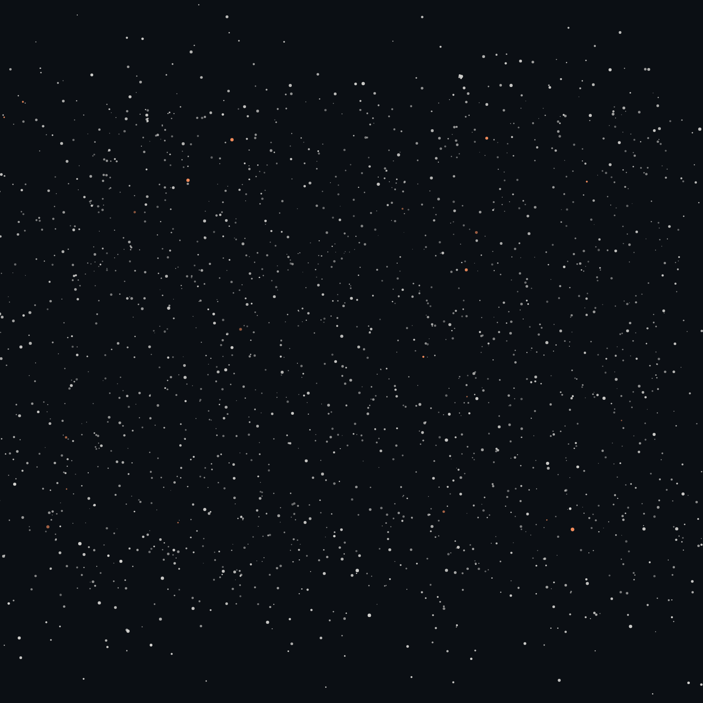
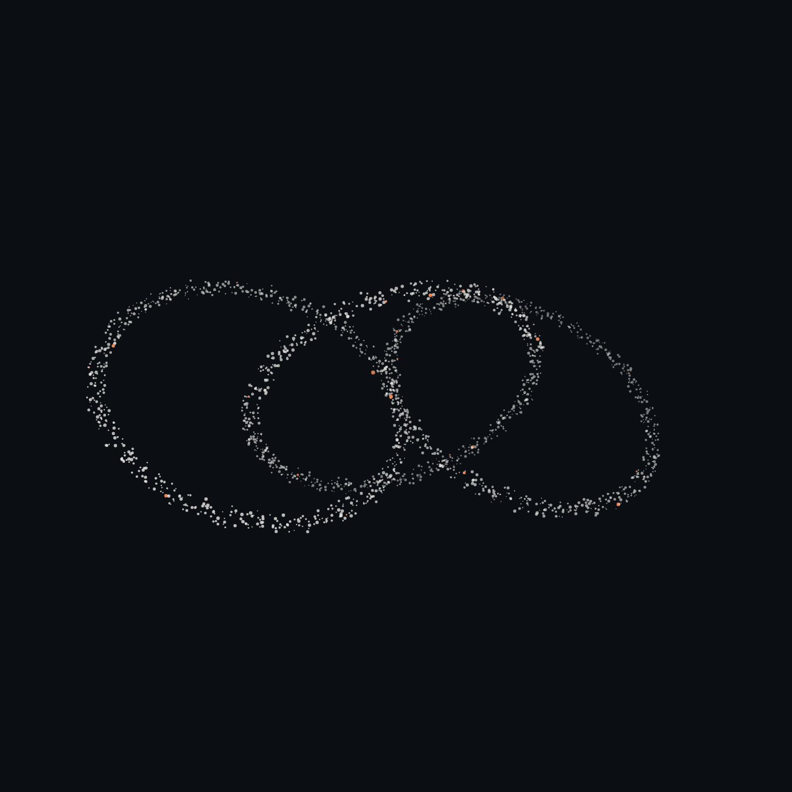

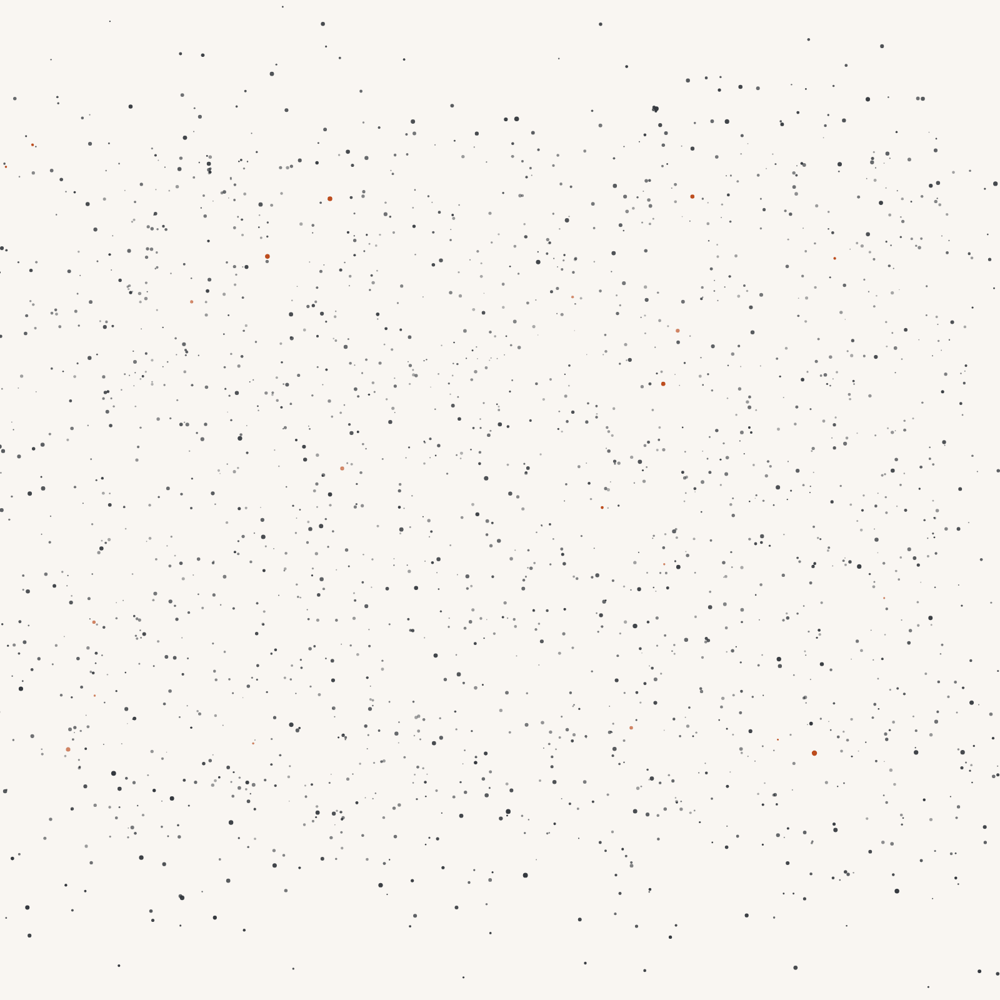

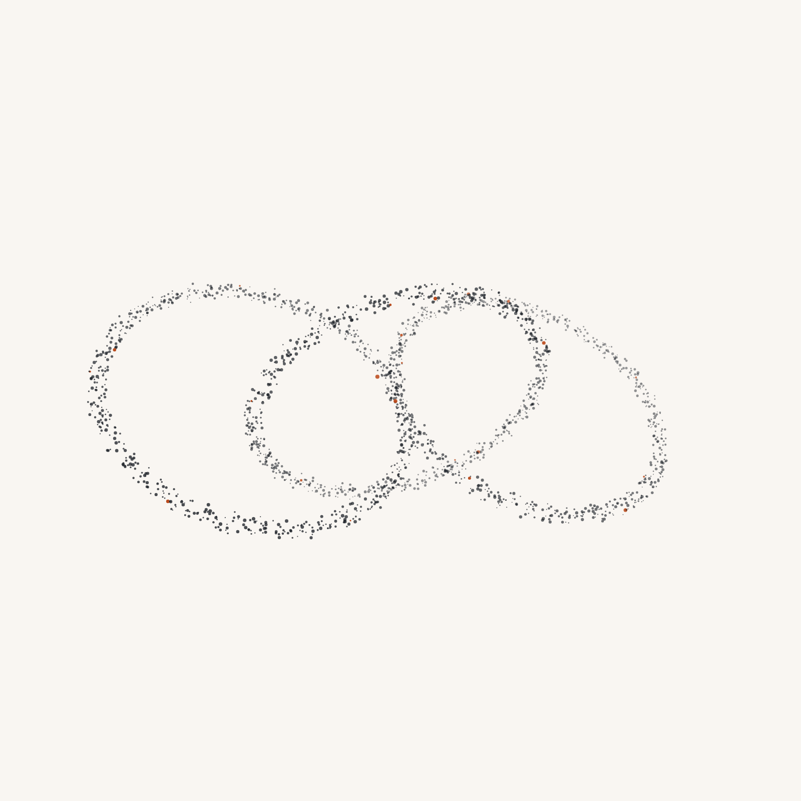

Rendered, then as observed
Founders are photographed as they really are, under identical conditions (see photography.md). Each photo also gets an AI edit, changing only clothes and grooming, that makes them look sharp and businesslike. On the site, the card shows the edit first, labelled Rendered / AI, then shifts once to the real photo, labelled As observed.
- The real photo is always the default. It is the only image in the HTML, and the one used for social cards, LinkedIn, press, documents and slides. Readers without JavaScript, with reduced motion, or using a screen reader get the real photo.
- The shift is a Doppler shift. Bands on the 45° grid slide along their own diagonal, splitting into blueshift (accent) ahead and redshift (signal) behind. About 600 ms, once per card, never looping, no flicker and no full-frame flash.
- Every founder consents to both images, and can withdraw consent to the edit at any time.
Open the demo, frame by frame · portraits/glitch.js

Diagrams, not screenshots
- 1 px strokes in text or muted; one 1.5 px path in accent: the one that matters.
- Geometry on the 45° grid. Labels in mono, sentence case, at least 12 px when placed.
- Frame: an organisation. Cone: an agent’s reach. Node: a resource. Grant: an arrow with a key notch. Denial: a stopped line ending in a bar, in signal. Viewer: access checks only.
- Every diagram must work in greyscale: grant and denial differ in shape, not only colour.
The SVGs use CSS custom properties with fallbacks, so the same file adapts to the theme when inlined into a page that loads tokens.css, and uses fixed colours as an image. Labels are live text with Commit Mono embedded, so they stay editable.
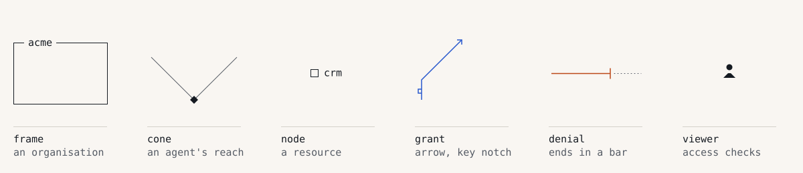
diagrams/components/.


Social, slides, documents and email
Headlines on the social card and slides use the content review’s recommended Option A. It is not approved copy yet: every template is editable HTML, and the rasters re-render from it with build/render.mjs.

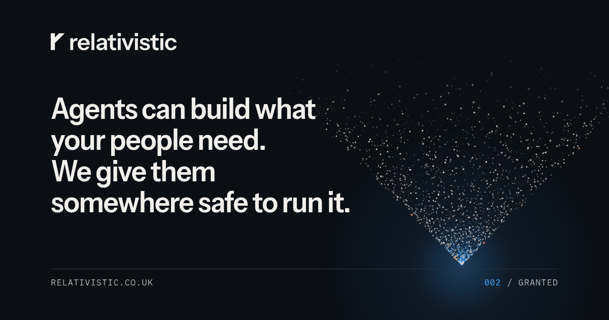
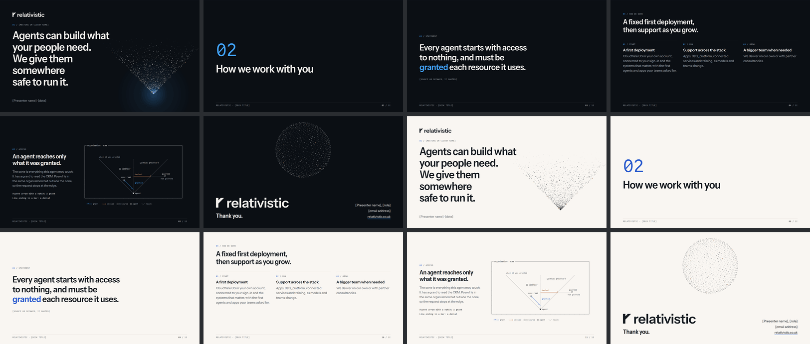
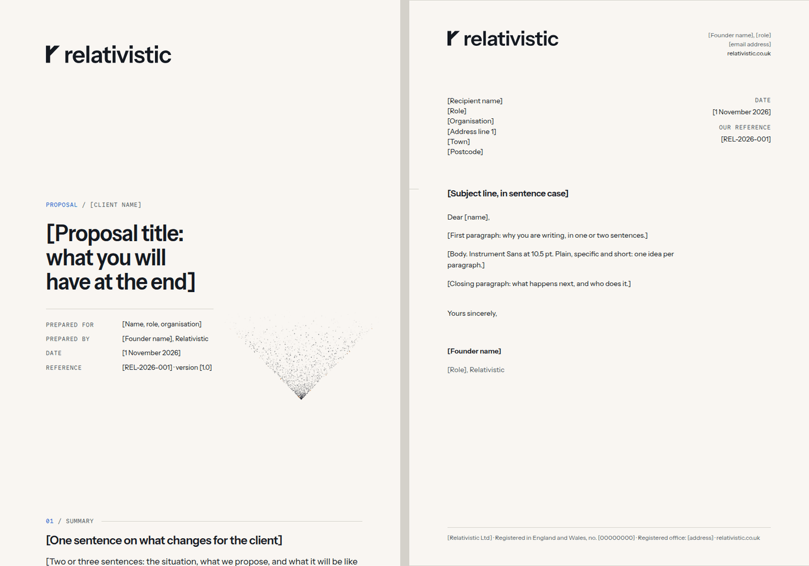
| Harry Robbins Co-founder, product and delivery Relativistic · relativistic.co.uk |

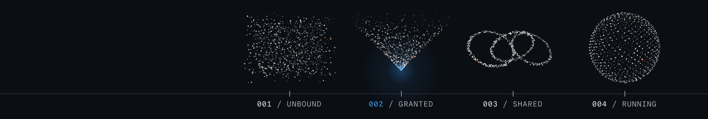
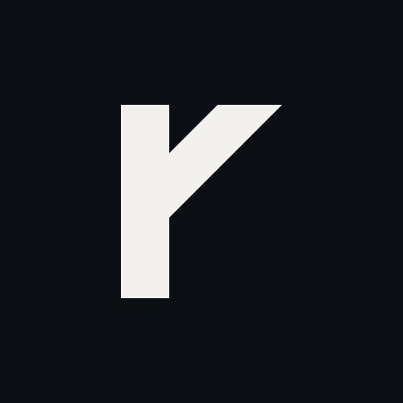
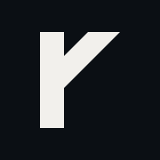
Files and how the site uses them
The site imports brand/tokens.css directly and loads the fonts from brand/fonts/ through Astro’s Fonts API. Copy the icons and the social card into public/ when they change:
<link rel="icon" href="/favicon.ico" sizes="32x32">
<link rel="icon" href="/icon.svg" type="image/svg+xml">
<link rel="apple-touch-icon" href="/apple-touch-icon.png">
<meta property="og:image" content="https://relativistic.co.uk/og.png">Fonts: instrument-sans-wght.woff2 (30 KB, normal width) fits the site’s 45 KB critical path; the width axis needs instrument-sans-wdth-wght.woff2 (57 KB). Without it, font-stretch falls back to normal width and nothing breaks.
- tokens.css and tokens.json: colour, type, space, rules, radii, focus, motion, field and portrait settings. Generated by
build/tokens.mjs. - fonts/: WOFF2 files,
fonts.cssand the OFL licences (Instrument Sans, Commit Mono). logo/: symbol, wordmark and horizontal lockup, each on ink, on paper, black and white.icons/:favicon.ico,icon.svg,apple-touch-icon.png.field/:field.js,reference.htmland eight stills.build/: the scripts that generate tokens, outlines, diagrams and rasters.